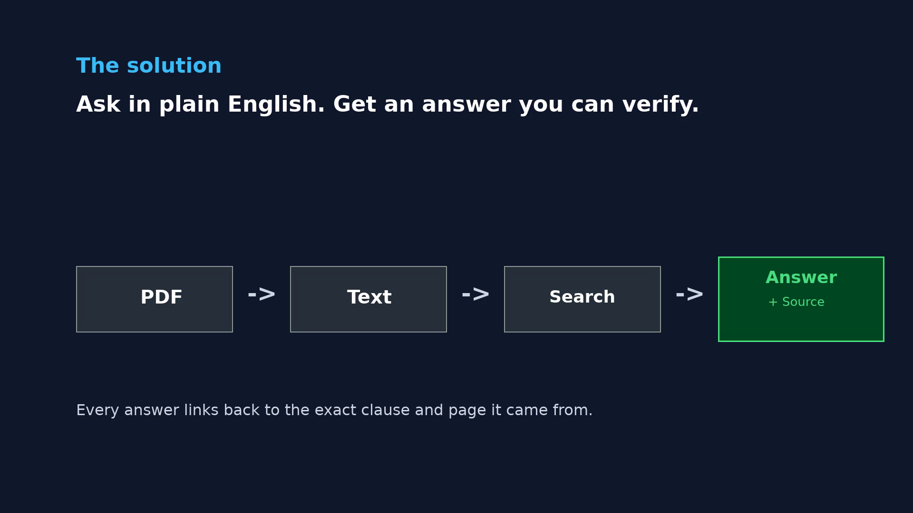

Hundreds of contracts, one question — answered with the source attached.
A self-built AI tool that reads a supplier's full contract stack and answers questions in plain English, with every claim traced back to the exact clause and page it came from.
Grew out of consolidating supplier contracts during a post-merger integration — where this exact question kept coming up by hand.
02
Answers you can check yourself
Every answer links to the original PDF, the exact page, and the clause it's drawn from — not a black box.
03
Built for oversight, not autopilot
Flags what it isn't sure of instead of guessing, and a human signs off before anything is relied on.
The problem
Compliance questions live inside hundreds of PDFs.
Procurement, legal and compliance teams manage contracts across dozens of suppliers — master agreements, statements of work, amendments, data processing agreements, NDAs. A question like "which contracts let us terminate if a supplier is acquired?" means opening file after file, by hand, across every one of them. Regulatory pressure (nDSG, FINMA outsourcing rules, DORA) makes that overview mandatory, not optional.
The approach
Ask in plain English. Get a traceable answer.
Under the hood: every PDF is read, deduplicated and checked for hidden multi-document bundles, then resolved into a proper contract hierarchy — which SOW belongs to which master agreement, which amendment supersedes which clause. Questions are answered against that structure, never against a single file in isolation.
The answer (left) and the exact clause it's drawn from (right) — page and document named, not just quoted.

Every answer is required to carry its source forward — unsourced claims are treated as unverified, not as an answer.
What I learned
Results & learnings
Structure matters more than search. Most of the real work isn't the question-answering — it's building a clean contract hierarchy first, so an amendment is never read in isolation from the agreement it changes.
"I don't know" is a feature. The tool is built to flag low-confidence matches and missing data for a human to resolve, rather than quietly guessing — a handful of edge cases in testing needed exactly that.
Explaining it is harder than building it. Describing the tool to colleagues outside data science shaped this page and video as much as the underlying code.
Limits & governance
What this is — and isn't.
Synthetic data only. Every contract shown here and in the video is fictional test data, generated for this demo. No real supplier, client or confidential information appears anywhere.
Human-in-the-loop by design. Every answer is reviewed against its source clause before anyone relies on it — the tool assists a decision, it doesn't make one.
AI-assisted production. The synthetic test contracts, parts of the code, and this video's narration voice were produced with AI assistance, used and reviewed by me throughout.
Let's talk
Procurement, AI tooling, or contract intelligence — I'd welcome the conversation.